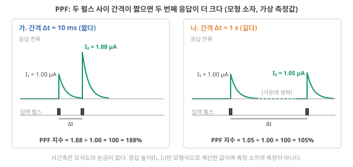
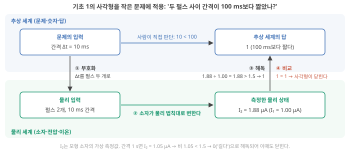
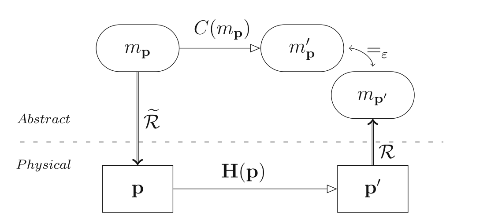
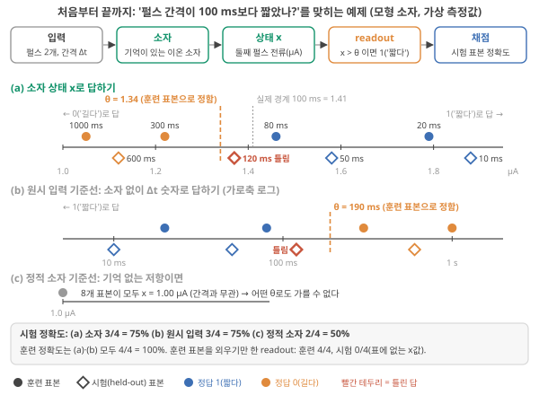
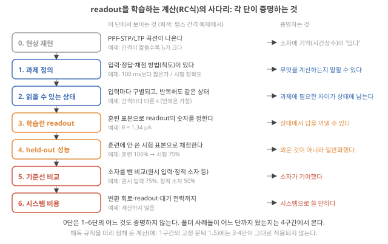
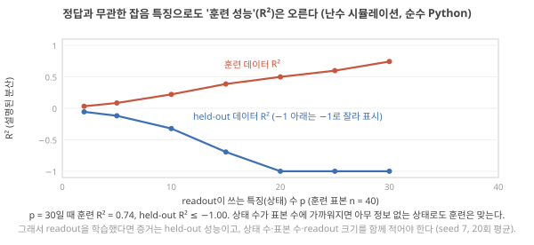
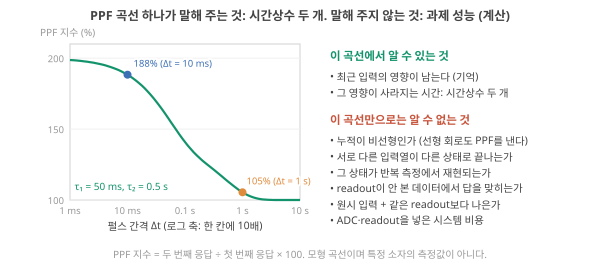
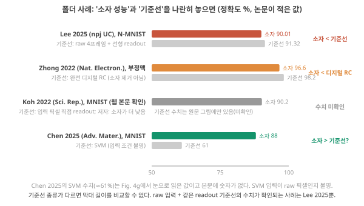
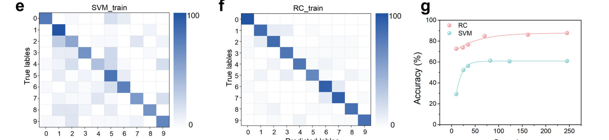
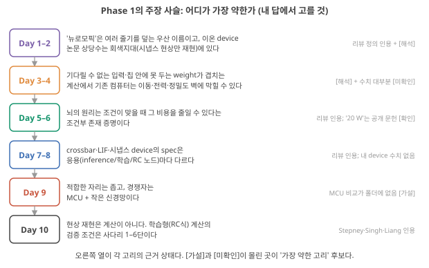

D6. 무엇을 해야 ’계산한다’고 말할 수 있는가? PPF·STP·LTP 관찰이 곧 유용한 소자인가?
Phase 1 · 왜 뉴로모픽 컴퓨팅인가 · 10월 29일 (목)
답에 들어가야 할 것 — 현상 모사와 계산 능력의 구분, 계산이라고 부를 최소 조건. Phase 1 종합: "왜 필요한가" 3문장과 가장 약한 고리
기본 경로: ① 사전 테스트(권장) → ② 학습자료(구간마다 잠깐 점검까지) → ③ 백지 회상 → ④ 가르치듯 내 답. ⓪·⑤와 접힌 '심화'·'추가 연습'은 선택입니다. 한 번에 끝낼 필요 없이 구간 단위로 나눠 읽어도 되고, 다시 열면 '지난번 읽던 곳' 링크가 뜹니다.
① 사전 테스트와 먼저 만들어 보기
아직 배우지 않은 내용을 먼저 풀어 봅니다. 많이 틀리는 것이 정상이고, 그게 목적입니다. 먼저 답해 본 문제는 읽을 때 눈에 들어오고 더 오래 남습니다. 문제마다 정답만 보이고, 이유는 학습자료와 ⑤ 다시 풀기에서 봅니다. 다 풀면 학습자료가 열립니다. 건너뛰려면 학습자료 위의 '그냥 읽기'를 누르세요(권장 단계일 뿐 필수는 아닙니다).
② 학습자료
오늘의 연구 질문 — 내 이온 소자(예: 고분자 전해질 접합)가 PPF 같은 시냅스 현상을 보였다면, 그것만으로 "계산하는 소자"라고 말할 수 있나? 아니라면 무엇을 어떤 순서로 더 보여야 하나?
필요한 개념 (★ = 오늘 처음)
- 시간상수 τ와 감쇠(D3 5-2), 가중치와 행렬–벡터 곱(D2, D4), '기준선'이라는 말과 MCU + 작은 신경망(D5) — 처음 쓰는 자리에서 한두 줄로 다시 말합니다
- ★ PPF 지수, 그리고 "물리계가 계산한다"의 네 단계(사각형) (1구간)
- ★ 과제·표본·훈련/시험(held-out) 데이터·readout·정확도·과적합·기준선 — 작은 예제 하나(펄스 간격 맞히기)로 한꺼번에 (2-1)
- ★ 사다리 0–6단과 기준선의 종류 (2-2, 2-3)
- ★ PPF 곡선이 증명하는 것과 못 하는 것 (3구간)
끝나면 내 말로 설명할 수 있어야 하는 것
- 그림 3(펄스 간격 예제)을 짚으며 "훈련 100% → 시험 75%"와 "원시 입력 기준선도 75%"가 각각 무엇을 뜻하는지 말할 수 있다.
- PPF 곡선만 있는 새 논문 그림을 보고, 그것이 사다리 몇 단이며 다음 단으로 가려면 어떤 실험이 필요한지 말할 수 있다.
- 폴더 논문 하나를 골라 기준선이 있는지, 있다면 어떤 종류인지 말할 수 있다.
나중에 쓰이는 곳 — D7–D8(readout = 선형 회귀, 과적합을 줄이는 방법), D12(지연 탭 기준선 실습), D13(Lee 2025의 τ 조절), D15(벤치마크의 데이터 나누기), D16(기준선 일곱 종류, 선형 회로의 PPF), D18·D25(증거 수준 체크리스트). 이온 소자 판단으로는 "PPF 다음에 내 소자로 할 실험은 무엇인가"(여러 입력열을 반복해 넣고 끝 상태가 구별·재현되는지)와 "내 소자 결과를 어떤 기준선과 비교할 것인가"에 쓰입니다.
Phase 1의 마지막 날입니다. 지난 닷새 동안 "왜 뉴로모픽인가"를 기존 컴퓨터의 벽(D2), 뇌의 원리와 조건(D3), 하드웨어의 사양(D4), 적합한 문제(D5)로 나눠 봤습니다. 오늘 질문은 그 모든 것의 발밑에 있는 질문입니다. 소자가 PPF·STP·LTP 같은 시냅스 현상을 보였다면, 그 소자는 "계산"을 한 것인가? 세 현상은 D1 2구간의 (마) 회색지대에서 이름만 봤고, 오늘 1구간 첫머리에서 그림으로 다시 봅니다. 폴더의 이온 소자 논문 상당수가 이 현상들을 첫 그림으로 내세우기 때문에, 이 질문에 답하지 못하면 Phase 2–5의 논문을 평가하기 어렵습니다. 다섯 개의 학습 구간입니다.
- "현상을 재현했다"와 "계산했다"는 왜 다른 말인가? (PPF가 무엇인지부터, 그리고 "계산"의 네 단계)
- readout을 데이터로 학습하는 계산(RC식)에서 "계산했다"고 말하려면 무엇을 보여야 하나? (작은 예제 하나 → 사다리 그림 → 단마다 더 깊게)
- PPF 곡선 하나는 무엇을 증명하고 무엇을 증명하지 못하나?
- 폴더의 논문들은 사다리의 어디에서 멈췄나? (기준선이 있는 예와 없는 예)
- Phase 1 종합: D1–D6을 오늘의 질문에 다시 잇기 (새 내용 없음)
학습 구간 1. 현상 재현과 계산은 다른 말이다
두 펄스의 전류로 PPF 지수를 계산하고, "물리계가 계산한다"는 말을 네 단계(부호화 → 물리 변화 → 해독 → 비교)로 설명하며, 시냅스 현상 재현이 그중 어디까지인지 말할 수 있게 된다.
먼저: PPF·STP·LTP — 오늘 내내 판단할 소자 현상
무엇을 볼지. 소자에 짧은 전압 펄스(pulse: 짧은 시간만 걸었다 끄는 전압) 두 개를 간격 Δt를 두고 넣고, 펄스마다 흐른 전류의 봉우리를 잽니다. 그림 1은 같은 모형 소자에 간격만 바꿔 넣은 두 경우입니다. 위가 응답 전류, 아래가 입력 펄스입니다.

그림을 따라가며. 가(10 ms): 첫 응답 \(I_1\) = 1.00 µA, 두 번째 응답 \(I_2\) = 1.88 µA로 두 번째가 더 큽니다. 나(1 s): \(I_2\) = 1.05 µA로 첫 응답과 거의 같습니다. 이렇게 간격이 짧을수록 두 번째 응답이 커지는 현상을 PPF(paired-pulse facilitation, 짝펄스 촉진)라 하고, 크기를 PPF 지수로 적습니다.
\[ \text{PPF 지수} = \frac{I_2}{I_1} \times 100\ (\%) \]
가는 1.88 ÷ 1.00 × 100 = 188%, 나는 105%입니다. 100%면 첫 펄스의 흔적이 남지 않은 것이고, 100%를 넘는 만큼이 남은 흔적입니다.
왜 생기나(이온 소자에서 흔히 드는 설명). 첫 펄스가 이온을 한쪽으로 몰아 전도도(전류가 얼마나 잘 흐르는지)가 잠깐 오르고, 펄스가 끝나면 이온이 농도 차 때문에 천천히 되돌아갑니다. 다 돌아가기 전에 두 번째 펄스가 오면 남은 몫 위에 새 몫이 얹힙니다. D3 5-2의 "이온 축적은 적분, 역확산은 누설"과 같은 그림입니다. 되돌아가는 빠르기를 재는 것이 시간상수 τ이고, 간격 전체에 대한 곡선과 그 모형식은 3구간에서 봅니다. [해석: 실제 기구는 소자마다 다를 수 있음]
STP와 LTP. 자극 뒤 커진 응답이 짧게 유지되다 사라지면 STP(short-term potentiation, 단기 강화), 오래 유지되면 LTP(long-term potentiation, 장기 강화)라 부릅니다. PPF도 커진 응답이 짧게 남았다 사라지는 현상이라, 소자 논문에서는 STP와 같은 묶음으로 보고하는 일이 흔합니다. 해석 '짧다/길다'의 기준 시각은 정해져 있지 않고 논문마다 다르게 씁니다(D1 2구간 용어 상자).
직관. 돌멩이를 던지면 포물선을 그립니다. 돌멩이가 "포물선 방정식을 계산했다"고 말하지는 않습니다. 하지만 같은 돌멩이의 궤적을 재서 "초속 몇 m로 던지면 어디 떨어지나"라는 문제의 답으로 쓴다면, 그때는 돌멩이를 계산에 쓴 것입니다. 차이는 돌멩이가 아니라 우리가 문제를 정의하고, 입력을 넣고, 결과를 읽어 답으로 해석하는 절차에 있습니다. 그림 1의 PPF도 마찬가지입니다. 전류가 커진 것만으로는 아무 문제도 풀지 않았습니다.
기초 1: 물리계가 "계산한다"는 것의 뜻
왜 필요한가. "소자가 시냅스처럼 반응했다"와 "소자가 계산했다"를 구별할 기준이 없으면, 모든 물리 현상이 계산이 되어 버립니다. Stepney의 물리 reservoir computing(재료가 입력에 시간에 따라 반응하는 모습을 계산 자원으로 쓰고, 그 반응을 답으로 바꾸는 마지막 규칙만 학습하는 방법; D1 2구간의 (라) 줄기, Phase 2의 주제) 튜토리얼은 이 질문을 정면으로 다룹니다. "물리계는 언제 계산하는가? 즉 단순히 물리계로 존재하는 것이 아니라, 특정하게 그리고 신뢰성 있게 계산을 수행하는 것은 언제인가?" Stepney 2024, p.666
무엇인가. Stepney가 소개하는 추상/표현(AR) 이론의 틀은 두 층을 둡니다. 위층은 추상 세계(문제와 답, 숫자와 기호), 아래층은 물리 세계(소자, 전압, 이온). 네 개의 화살표가 사각형을 이룹니다. 그림 2는 그 사각형을 그림 1의 소자로 푸는 작은 문제, "두 펄스 사이 간격이 100 ms보다 짧았나?"(짧으면 1, 아니면 0)에 맞춰 그린 것입니다. 위 띠가 추상 세계, 아래 띠가 물리 세계이고, ①–④를 차례로 따라갑니다.

1. 내려가기(부호화). 추상 문제의 입력을 물리 입력으로 바꿔 소자에 넣는다. 그림 2: 숫자 'Δt = 10 ms'를 '10 ms 간격의 펄스 두 개'로.
2. 물리가 움직인다. 소자가 자기 물리 법칙대로 변한다(이온이 움직이고 전도도, 곧 전류가 얼마나 잘 흐르는지가 바뀐다). 이 단계는 소자가 혼자 한다. 그림 2: 두 번째 전류가 1.88 µA가 된다.
3. 올라오기(해독). 변한 뒤의 물리 상태를 읽어 추상 결과로 해석한다. 이 해석 규칙을 해독 규칙, 곧 readout이라 부른다. 그림 2: '두 번째 전류 ÷ 첫 번째 전류가 1.5보다 크면 1'. 1.88 → 1.
4. 비교. 해독한 답이 추상 세계에서 직접 구한 답과 (허용 오차 안에서) 일치하는가? 일치하면 '사각형이 닫힌다'고 하고, 그때 그 물리계는 그 문제를 계산한 것이다. 그림 2: 직접 판단한 답도 1(10 ms는 100 ms보다 짧다) → 닫힘.
작은 계산. 1 s 간격이면 두 번째 전류는 1.05 µA, 비 1.05 < 1.5라 0으로 해독되고, 직접 판단한 답(1 s는 100 ms보다 길다 = 0)과 같아 역시 닫힙니다. 이 두 입력에 대해서는 PPF 소자가 이 작은 문제를 "계산"합니다. 문제가 작을 뿐입니다. 여기서 문턱 1.5는 사람이 미리 정한 해독 규칙입니다. 2구간은 같은 문제에서 문턱을 데이터로 정합니다.
같은 사각형을 원문은 이렇게 그립니다. 그림 2는 교육용으로 새로 그린 도식이고, 아래는 Stepney 원문의 그림입니다. 기호가 낯설어도 화살표 네 개의 자리만 그림 2와 맞춰 보면 됩니다.

여기까지: 그림 1로 PPF 지수(188%, 105%)를 계산하고, 그림 2의 ①–④를 짚으며 "이 소자가 이 작은 문제를 계산했다"가 무슨 뜻인지 말할 수 있다. 다음: 사각형이 닫히지 않는 경우.
어디서 실패하나. Stepney는 "계산한다"고 주장되는 많은 장치가 세 가지 이유로 이 기준을 못 넘는다고 씁니다. (a) 표현(추상 모델과 물리 장치의 연결)이 아예 없는 경우, (b) 사각형을 닫기 위해 다른 컴퓨터가 필요한 경우, 전형적으로 원하는 계산 전체를 사후에 출력 해석 단계에 숨겨서 수행하는 경우(돌멩이-컴퓨터), (c) 계가 잘 특성화되지 않아 우연히 맞은 결과만 골라 쓰는 경우. Stepney 2024, p.667 여기서 특성화(characterisation)는 실험으로 "어떤 입력 범위에서 사각형이 허용 오차 안에 닫히는가"를 미리 알아 두는 것입니다 Stepney 2024, p.667. 그림 2의 문제에서도 이 일이 생깁니다. 문턱 1.5는 모형식으로 간격 약 69 ms에 해당하므로, 약 69–99 ms 간격은 정답이 1('짧다')인데 비가 1.5 아래라 0으로 해독됩니다. 이 범위에서는 사각형이 닫히지 않습니다. [계산: 3구간 모형식] 10 ms와 1 s만 재 보고 "계산한다"고 쓰면 (c)에 가까워지고, 닫히는 범위를 미리 재 두는 것이 특성화입니다.
(b)를 장면으로. 철학 논쟁에는 "돌멩이도 어떤 함수든 계산할 수 있다"는 주장이 있고, Stepney는 이것을 예로 듭니다(Chalmers 1996 인용) Stepney 2024, p.666. 돌멩이 안의 미세한 상태(원자의 진동, 온도 분포)는 늘 변하므로, 변한 상태마다 "이 상태는 답 56을 뜻한다" 같은 해석표를 나중에 붙이면 돌멩이가 7 × 8을 '계산'한 것처럼 꾸밀 수 있다는 것입니다. 그런데 그 표를 만들려면 7 × 8 = 56을 이미 다른 곳(사람이나 다른 컴퓨터)에서 계산해 알고 있어야 합니다. 일은 해석표가 했고 돌멩이는 아무 일도 하지 않았습니다. 해석 이온 소자에서도 같은 일이 생길 수 있습니다. 해독 단계(readout)가 크고 복잡해서 일을 다 하면, 소자는 계산한 것이 아닙니다. (b)가 오늘의 핵심입니다.
연결. 이온 소자 논문의 PPF·STP·LTP 그림은 위 사각형의 ②만 보여 줍니다. 물리가 움직였다는 것. ①·③·④(문제, 해독, 비교)가 붙어야 "계산"이 됩니다. Aluru 리뷰가 이온 소자로 "synaptomimetic(시냅스 흉내) 거동"을 낸 보고가 폭발적으로 늘었지만 목표에 닿으려면 훨씬 정교한 기능이 필요하다고 쓰고 Aluru 2026, 요약면, 생물을 흉내 내려면 "단순한 이온 전도도 이력(hysteresis)을 넘는" 복잡한 기능이 필요하다고 쓴 것 Aluru 2026, p.593이 같은 지적입니다.
내가 최근 본 이온 소자 논문의 첫 그림(PPF나 LTP)을 떠올려, 그림 2의 ①–④ 중 어디까지 보여 줬는지 적어 보세요. "문제"가 정의되어 있었나요? 결과를 "답"으로 해석하는 규칙이 있었나요?
- PPF 지수 = 두 번째 응답 ÷ 첫 번째 응답 × 100(%). 간격이 짧을수록 크다(모형 소자: 10 ms에서 188%, 1 s에서 105%).
- 물리계가 계산한다 = 추상 문제의 입력을 물리로 부호화하고, 물리가 움직인 뒤 상태를 해독해 얻은 답이 추상 세계의 답과 허용 오차 안에서 일치한다(사각형이 닫힌다) Stepney 2024, p.666–667.
- 실패 유형: 표현 없음 / 해독 단계에 계산을 숨김(다른 컴퓨터 필요) / 우연히 맞은 것만 고름 Stepney 2024, p.667. 미리 정한 문턱도 닫히는 입력 범위를 재 둬야 한다(문턱 1.5는 약 69–99 ms에서 틀림) [계산].
- 시냅스 현상 재현은 ②(물리가 움직임)만이다. Aluru: "단순 이온 전도도 이력을 넘어서야" Aluru 2026, p.593.
학습 구간 2. 학습형 계산(RC식)을 검증하는 조건: 과제, 읽을 수 있는 상태, 학습한 readout, held-out, 기준선
readout의 숫자를 데이터로 정하는 계산(RC식)에서 "계산했다", 더 나아가 "소자가 기여했다"고 말하려면 무엇을 보여야 하는지를 펄스 간격 예제 하나로 끝까지 따라가고, 그 단계들을 사다리 그림(그림 4)에 놓을 수 있게 된다.
1구간의 문턱 1.5는 사람이 정했습니다. 그런데 Phase 2 이후에 읽을 reservoir computing(RC) 논문들은 해독 규칙의 숫자를 데이터로 정합니다. 소자에서 읽는 숫자가 수백–수천 개가 되면(4구간의 Lee 2025는 2,352개) 사람이 규칙을 손으로 정하기 어렵기 때문입니다. 규칙을 데이터로 정하면 새 함정이 둘 생깁니다. 규칙이 데이터를 외워서 맞힐 수 있고, 소자가 없어도 규칙만으로 맞힐 수 있습니다. 이 구간은 먼저 1구간과 같은 문제를 데이터로 푸는 작은 예제를 끝까지 따라가며 필요한 낱말을 하나씩 만나고(2-1), 그 단계들을 사다리 그림 한 장으로 정리한 뒤(2-2), 단마다 더 깊게 봅니다(2-3).
2-1. 처음부터 끝까지: 펄스 간격 맞히기
문제는 1구간과 같습니다("두 펄스 사이 간격이 100 ms보다 짧았나?"). 소자도 같은 모형 소자이고, 전류값은 그 모형식에서 계산한 가상 측정값입니다(같은 입력을 다시 넣으면 같은 값이 나온다고 가정). 다른 점은 하나, 해독 문턱을 사람이 정하지 않고 데이터로 정한다는 것입니다. 단계 상자를 하나씩 열며 굵은 낱말을 챙기세요. 오늘 나머지 내내 쓰는 말입니다.
아래 예제에서 데이터로 정한 readout은 시험 표본 네 개 중 몇 개를 맞힐까요? 소자를 빼고 간격 Δt 숫자 자체를 같은 방식의 readout에 넣으면 소자보다 나을까요? 기억이 전혀 없는 소자라면 몇 개를 맞힐까요? 세 숫자를 먼저 적어 보세요.
1. 과제 정하기. 무엇을 맞히는지 정한 문제를 과제(task)라 한다. 세 가지가 정해져야 한다. 입력: 펄스 두 개를 간격 Δt로 넣는다. 정답: Δt가 100 ms보다 짧으면 1('짧다'), 아니면 0('길다'). 채점 방법(척도): 맞힌 비율, 곧 정확도(accuracy, 맞힌 개수 ÷ 전체 개수). 이 세 가지가 있어야 '맞았다'를 셀 수 있다.
2. 데이터 나누기. 간격 여덟 가지로 재서 표본(sample) 8개를 얻는다. 표본 하나 = 입력 하나(Δt)와 그 정답의 한 쌍. 학습 전에 넷은 규칙을 정하는 데 쓸 훈련 데이터(training data), 넷은 채점에만 쓸 시험 데이터(test data)로 떼어 둔다. 이렇게 떼어 둔 시험 데이터를 held-out 데이터라고도 부른다. 훈련: 20, 80 ms(정답 1), 300, 1000 ms(정답 0). 시험: 10, 50 ms(정답 1), 120, 600 ms(정답 0). 시험 표본은 마지막 채점 때까지 보지 않는다.
3. 상태 읽기. 소자에서 읽는 숫자를 상태(state)라 부른다. 여기서는 두 번째 펄스 때의 전류 x 하나다(첫 펄스의 응답은 늘 1.00 µA). 훈련: 1.79, 1.46, 1.22, 1.05 µA. 시험: 1.88, 1.58, 1.37, 1.12 µA. 간격이 다르면 x가 다르고(구별), 다시 재도 같다고 가정했다(반복 가능). 실제 소자라면 이 두 가지부터 측정으로 보여야 한다.
4. readout 학습. 상태를 답으로 바꾸는 규칙이 1구간에서 본 readout이다. 여기서는 'x가 문턱 θ보다 크면 1'. θ를 데이터로 정하는 일이 학습이고, 훈련 표본만 본다. 정답 1 중 가장 작은 x(1.46)와 정답 0 중 가장 큰 x(1.22)의 가운데: θ = (1.46 + 1.22) ÷ 2 = 1.34 µA. 훈련 표본 넷은 모두 맞는다(훈련 정확도 4/4 = 100%). θ를 그 넷에 맞춰 골랐으니 당연한 결과다.
5. held-out 채점. 시험 표본에 같은 규칙을 쓴다. 1.88 → 1(맞음), 1.58 → 1(맞음), 1.37 → 1(틀림: 120 ms는 '길다'), 1.12 → 0(맞음). 시험 정확도 3/4 = 75%로 훈련의 100%보다 낮다. 훈련 표본에 80 ms와 300 ms 사이의 간격이 없어서 문턱이 실제 경계(100 ms에서 x = 1.41 µA)보다 낮게 잡혔기 때문이다. 극단적인 비교: 훈련 표본 넷의 (x, 정답)을 표로 외우기만 한 readout도 훈련은 4/4이지만, 시험 표본의 x값은 표에 없으니 하나도 답하지 못한다. 이렇게 readout이 훈련 데이터에만 맞춰져 새 데이터에서 성능이 떨어지는 것을 과적합(overfitting)이라 한다(2-3에서 숫자로 다시 본다). 과적합은 시험 데이터에서만 드러난다.
6. 원시 입력 기준선. "소자가 없었다면 얼마나 됐을까"를 재는 비교 대상이 기준선(baseline)이다(D5 1구간에서 이름을 봤다). 가장 단순한 것은 소자를 빼고 입력 숫자 Δt를 같은 방식의 readout에 넣는 원시 입력 기준선이다. 훈련 표본에서 정답 1의 가장 긴 간격(80 ms)과 정답 0의 가장 짧은 간격(300 ms)의 가운데, 곧 190 ms보다 짧으면 1. 시험: 10 맞음, 50 맞음, 120 틀림, 600 맞음 → 75%. 소자와 같다. 이 과제에서 소자는 Δt를 전류로 바꿨을 뿐 readout의 일을 덜어 주지 않았으므로 '소자가 기여했다'고 말할 수 없다.
7. 정적 소자 기준선(다른 종류). 그런데 원시 입력 readout이 Δt를 받을 수 있었던 것은 누군가 시계로 간격을 재서 숫자로 줬기 때문이다. readout이 두 번째 펄스 순간의 값만 볼 수 있다면? 기억이 없는 보통 저항(지금 걸린 전압에만 따라 전류가 정해지는 소자)은 Δt와 상관없이 두 번째 펄스에도 1.00 µA를 낸다. 시험 표본 넷이 모두 같은 값이라 어떤 θ로도 가를 수 없고, 한쪽으로 다 찍으면 2/4 = 50%다. 소자(75%)가 이보다 낫다는 것은 '현재 순간만 읽는 조건에서 소자의 기억이 쓰였다'는 진단이다. 다만 차이 25%p를 기억의 정확한 몫으로 읽지는 않는다. 부호화·동역학·상태 읽기·readout이 서로 얽혀 있어서 기준선 사이의 차이를 한 부품의 몫으로 딱 떼어 줄 수 없기 때문이다. Singh 2026, p.18
8. 시스템 비용. 소자가 기여하는 조건이라도, 전류를 재고 숫자로 바꾸는 회로와 readout까지 넣은 비용이 MCU(센서 옆에 붙는 작은 범용 컴퓨터 칩)의 타이머로 간격을 재는 것보다 싼지는 따로 따져야 한다(D5 3구간). 이 예제에서는 계산하지 않는다.
한 장으로. 그림 3은 위 단계를 한 장에 모은 것입니다. 맨 위 줄이 단계 1–5의 흐름이고, ①–③이 소자·원시 입력·정적 소자로 답한 결과, 아래 회색 상자가 점수입니다.

여기까지: 그림 3을 짚으며 과제·표본·훈련/시험 데이터·readout·정확도·과적합·기준선을 예제의 숫자로 말할 수 있다(θ = 1.34 µA, 훈련 100% → 시험 75%, 원시 입력 75%, 정적 소자 50%). 다음: 이 단계들을 사다리 한 장으로 정리한다.
2-2. 사다리 한 장으로 정리하기
무엇을 볼지. 방금 예제에서 한 일을 순서대로 쌓으면 그림 4의 사다리가 됩니다. 왼쪽이 단의 이름, 가운데가 그 단에서 보여야 하는 것(회색 줄은 방금 예제에서 그것이 무엇이었는지), 오른쪽이 그 단이 서면 증명되는 것입니다. 맨 아래 0단(현상 재현)이 1구간 그림 1의 PPF입니다.

순서가 있는 이유. 아래 단이 서지 않으면 위 단의 결과를 해석할 수 없습니다. 예컨대 같은 입력에 소자가 매번 다른 상태를 낸다면(2단 실패), 그 위에서 얻은 정확도가 소자의 동역학 덕인지 readout과 운 덕인지 가릴 수 없습니다. Singh은 명목상 같은 입력이 구별되고 충분히 재현되는 상태를 만들지 못하면, 그 뒤 벤치마크(성능을 비교하려고 정해 둔 표준 과제) 성능이 좋아져도 그것을 물리 동역학의 공으로 믿을 만하게 돌릴 수 없다고 씁니다. Singh 2026, p.8
이 사다리가 적용되는 범위. 이 사다리는 Phase 2–5에서 읽을 논문들처럼 readout을 학습해 답을 내는 계산을 검증하는 기준이고, 모든 물리 계산의 필요조건은 아닙니다. 1구간의 문턱 1.5처럼 해독 규칙을 미리 정해 두는 계산에는 "학습한 readout"이 처음부터 없고, 그때의 기준은 정해 둔 입력 범위에서 사각형이 허용 오차 안에서 반복해 닫히는지(특성화), 그리고 해독 규칙이 계산을 숨기지 않는지입니다. Stepney 2024, p.666–667 다만 문턱 1.5 같은 숫자를 측정 데이터를 보고 골랐다면 그것도 데이터로 정한 숫자이므로, 고를 때 쓰지 않은 입력으로 다시 확인해야 합니다. 5단(기준선)은 "계산이 일어났다"보다 한 걸음 더 나간 주장, 곧 "소자가 기여했다"를 말할 때 필요한 단입니다. 해석
각 단이 지우는 '다른 설명'. 사다리의 각 단은 "그 결과가 소자의 계산 덕이 아니라 다른 이유 때문일 수 있다"는 의심을 하나씩 지웁니다. 2-1의 예제에 맞춰 보면 이렇습니다. 해석
| 단 | 이 단이 없으면 남는 다른 설명 | 예제에서 |
|---|---|---|
| 1 과제 | '맞았다'를 셀 기준이 없다 | 정답 = 100 ms보다 짧은가, 척도 = 시험 정확도 |
| 2 읽을 수 있는 상태 | 좋은 결과가 측정 흔들림이나 운일 수 있다 | 간격마다 다른 x, 반복해도 같다고 가정(실제로는 측정 필요) |
| 3 학습한 readout | 전류값 자체는 답이 아니다 | 훈련 표본으로 θ = 1.34 µA를 정함 |
| 4 held-out | readout이 훈련 표본을 외웠을 수 있다 | 훈련 100% → 시험 75%, 외우기 readout은 시험에서 답하지 못함 |
| 5 기준선 | 소자 없이도 같은 점수가 나올 수 있다 | 원시 입력 75%(같음), 정적 소자 50%(낮음) |
| 6 시스템 비용 | 다른 방법(MCU 등)이 더 쌀 수 있다 | 계산하지 않음 |
여기까지: 그림 4의 일곱 단을 아래에서 위로 짚으며 각 단이 예제에서 무엇이었고 무엇을 증명하는지 말할 수 있다. 다음: 단마다 더 깊게 — 실제 과제(MNIST), 상태가 여러 개일 때의 readout, 외우기가 얼마나 쉬운지, 기준선의 여러 종류.
2-3. 단마다 더 깊게: 과제와 상태, readout, held-out과 기준선
예제는 상태가 숫자 하나, 표본이 8개였습니다. 실제 논문은 상태가 수백–수천 개, 표본이 수천–수만 개입니다. 같은 낱말이 그 규모에서 무엇을 뜻하는지 봅니다.
기초 2: 과제와 "읽을 수 있는 상태"
과제(1단). 예제의 과제는 입력 = 간격 Δt, 정답 = 1 또는 0, 척도 = 정확도였습니다. 소자 논문에서 가장 흔한 연습 과제는 MNIST입니다. 입력 = 손글씨 숫자 그림(28×28 픽셀), 정답 = 0–9 중 하나, 척도 = 정확도. 시계열 과제라면 입력 = 전압 펄스 열, 정답 = 그 열이 어느 종류인지(분류) 또는 다음 값이 얼마인지(예측), 척도 = 정확도 또는 오차의 크기(예: NRMSE, 오차를 정답의 크기로 나눈 값)입니다. D2 장면 2·D5의 심전도 패치라면 입력 = 박동 하나 구간의 전압 파형, 정답 = 정상/이상, 척도 = 정확도(또는 이상 박동을 놓친 비율)입니다. 과제가 없으면 "맞았다"는 말 자체가 성립하지 않습니다.

읽을 수 있는 상태(2단). 소자 안에서 실제로 변하는 것은 이온 분포·농도 프로필·계면 전하 같은 물리 상태입니다. readout은 그것을 직접 볼 수 없고 전극에서 잰 숫자만 받습니다. 그래서 계산에서 말하는 '상태'는 입력을 넣은 뒤 소자에서 실제로 측정하는 값(전류, 전압, 전도도)들의 목록입니다. 두 조건이 붙습니다. (a) 구별: 과제에서 다른 답을 가져야 할 입력들이 서로 다른 상태로 끝나야 합니다. 같은 상태로 끝나면 뒤에서 아무리 애써도 못 가릅니다. (b) 반복 가능: 같은 입력을 다시 넣으면 거의 같은 상태가 나와야 합니다. Singh 2026은 바닥 드리프트(기준값이 천천히 흘러감), 불완전한 리셋, 열 축적, 비가역적 구조 변화에서 생기는 "겉보기 기억"은 한 번의 측정에서는 인상적으로 보여도 재현성을 해치므로 형편없는 계산 자원이라고 씁니다. Singh 2026, p.6 D4 4구간의 "구별되고 반복 가능한 상태 수"와 같은 조건입니다.
작은 숫자로. 4-bit 펄스 열을 넣고 마지막 전류 하나를 읽는다고 합시다. 4-bit 펄스 열은 박자 네 번에 걸쳐 '1이면 그 박자에 펄스를 넣고 0이면 쉬는' 입력입니다. 예: 1010은 첫째·셋째 박자에만 펄스. 가능한 열은 0000부터 1111까지 2⁴ = 16가지입니다. 16개 열이 16개의 서로 다른 전류값으로 끝나고, 각 값의 반복 측정 흔들림이 이웃 값과의 간격보다 작으면, 이 소자는 "4-bit 열을 전류 하나로 구별하는" 상태를 가진 것입니다. 흔들림이 간격보다 크면 구별되는 상태 수는 16보다 작습니다. 4구간의 Lee 2025가 바로 이 방식으로 픽셀 하나의 시간 정보를 소자 하나에 넣습니다.
기초 3: 학습한 readout — 상태에서 답을 꺼내는 직선 맞추기
왜 필요한가. 소자가 내는 전류 0.37 µA가 "숫자 7"이라는 뜻은 아닙니다. 상태(숫자 목록)를 답으로 바꾸는 규칙이 필요하고, 그 규칙을 데이터로 정하는 것이 readout 학습입니다. 예제의 readout은 문턱 하나였습니다. 상태가 여러 개면 규칙도 커집니다.
무엇인가. 가장 단순한 readout은 D4 기초 1의 행렬–벡터 곱입니다. 상태 벡터 \(\mathbf{x}\)(측정값 목록)에 가중치 행렬 \(W_{out}\)(측정값마다 "얼마나 중요하게 볼지"를 곱하는 숫자들의 표; D2 기초: 가중치)를 곱해 답 \(\mathbf{y} = W_{out}\mathbf{x}\)를 냅니다. "학습"은 정답을 아는 예제들(훈련 데이터)을 놓고, 예측과 정답의 차이(보통 차이를 제곱해 모두 더한 값)가 가장 작아지도록 \(W_{out}\)의 숫자들을 정하는 일입니다. 상태가 하나이고 답이 하나면 "점들에 가장 잘 맞는 직선 긋기"(선형 회귀)와 같은 일입니다. 예: 상태 \(x\) = 2, 4, 6일 때 정답 \(y\) = 1, 2, 3이면 \(y = 0.5x\)가 가장 잘 맞고, \(W_{out}\) = 0.5입니다. 상태가 100개면 가중치가 100개인 직선, 곧 100차원 공간의 평평한 면(초평면, hyperplane)을 맞추는 것이고, 계산은 컴퓨터가 합니다. 답이 '짧다/길다' 같은 범주일 때(분류) 가장 작은 readout은 문턱 하나입니다. 'x가 θ보다 크면 1'에서 θ를 훈련 데이터로 정하면 그것도 학습한 readout입니다(2-1의 예제).
왜 "readout만" 학습하나. reservoir computing(RC, Phase 2)의 핵심 약속은 소자(reservoir)는 고정하고 readout만 학습한다는 것입니다. Liang은 물리 RC가 RC 틀 안에서 물리 동역학을 계산 자원으로 "수확"해 자원 효율적 정보 처리를 노린다고 씁니다. Liang 2024, p.194 그러니 readout이 커지면 "수확"의 몫은 줄어듭니다.
readout이 커지면 무엇이 문제인가. readout이 커질수록(상태 수가 많거나, 여러 층의 신경망처럼 선형이 아닌 복잡한 readout을 쓰면) 소자가 아무것도 안 해도 readout이 답을 맞힐 수 있습니다. 1구간의 실패 유형 (b)가 이것입니다. 그래서 다음 두 조건이 필요합니다.
기초 4: held-out 성능과 기준선
held-out(4단) — 안 본 데이터에서 맞히는가. 2-1의 단계 2·5에서 본 것을 일반적으로 말하면 이렇습니다. 훈련에 쓴 데이터로 성능을 재면, readout이 그 데이터를 외운 것인지 규칙을 배운 것인지 구별할 수 없습니다. 그래서 데이터를 둘로 나눠, 한쪽(훈련)으로 \(W_{out}\)를 정하고 다른 쪽(held-out, 시험)으로만 성능을 잽니다. 나누는 시점은 학습 전이고, 떼어 둔 표본은 readout의 숫자뿐 아니라 '상태를 몇 개 쓸지', '문턱을 얼마로 할지' 같은 설정을 고를 때도 쓰지 않습니다. 시험 데이터를 보며 설정을 고르면 그 데이터도 사실상 훈련에 쓴 셈이 되기 때문입니다. [해석: 기계학습의 일반적 관행] Stepney는 reservoir를 학습한 뒤 "독립적인 시험 데이터로 평가해야 하며, 이 평가가 시스템이 요구된 계산을 충분히 잘 한다는 증거"라고 씁니다. Stepney 2024, p.669
작은 숫자로 — 외우기가 얼마나 쉬운가. 먼저 그림 5의 세로축부터 봅니다. 예제의 척도는 정확도였지만, 정답이 숫자(예: 다음 전압값)인 과제에서는 예측이 정답에서 얼마나 벗어났는지로 채점합니다. 그림 5의 \(R^2\)(설명된 분산)가 그런 척도로, 1이면 완벽, 0이면 평균값만 계속 찍는 것과 같음, 음수면 그보다 못함입니다. 여기서 분산은 값들이 평균에서 얼마나 흩어져 있는지를 재는 수로, 평균과의 차이를 제곱해 평균 낸 것입니다. 예: 정답이 1, 2, 3, 6이면 평균 3, 차이 −2, −1, 0, 3, 제곱 4, 1, 0, 9 → 합 14를 개수 4로 나누면 3.5입니다. 예측이 평균 3만 계속 찍으면 남는 오차(차이 제곱의 평균)가 바로 이 분산이라 \(R^2 = 0\), 오차가 0이면 \(R^2 = 1\)입니다. 식으로는 \(R^2 = 1 - (\text{예측 오차 제곱의 평균}) \div (\text{분산})\)이고, 예측이 평균보다 더 엉뚱하면 오차가 분산보다 커져 \(R^2\)가 음수가 됩니다. 정식 설명은 D13 기초: 분산·상관².
심화 · 분산을 n으로 나누나 n−1로 나누나
표본에서 모집단의 분산을 추정할 때는 개수 4 대신 n−1 = 3으로 나눈 4.67을 쓰는 것이 교과서 기본입니다. \(R^2\) 계산에서는 분자(예측 오차)와 분모(분산)를 같은 방식으로 나누므로 어느 쪽으로 나누든 결과가 같습니다.
그림 5가 하는 일. 정답과 아무 관계 없는 잡음 숫자 \(p\)개를 상태로 주고, 훈련 표본 40개로 직선을 맞춘 시뮬레이션입니다. 가로축은 readout이 쓰는 상태 수 \(p\), 빨간 선이 훈련 데이터, 파란 선이 held-out 데이터의 \(R^2\)입니다.

그림을 따라가며. 상태 수가 30개가 되면 훈련 데이터에서는 \(R^2\) = 0.74까지 오르지만 held-out에서는 −1 아래로 떨어집니다. 아무 정보 없는 상태로도 훈련 성능은 오릅니다. 왜 오르나. 가중치 하나는 예측을 움직이는 손잡이 하나입니다. 손잡이가 많을수록 훈련 표본 하나하나의 예측을 따로 맞춰 줄 여지가 커지고, 손잡이 수가 표본 수와 같아지면 모든 훈련 표본을 정확히 맞출 수 있습니다(\(p = n\)이면 훈련 \(R^2 = 1\)). 정답과 무관한 잡음으로 맞추면 훈련 \(R^2\)는 대략 \(p/n\) 근처가 됩니다(30/40 = 0.75; 시뮬레이션 값 0.74) 해석. 그런데 이 '맞음'은 훈련 표본의 우연한 값에 맞춘 것이라 새 표본에서는 엉뚱한 예측을 내고, 평균값만 찍을 때보다 오차가 커지므로 held-out \(R^2\)는 음수가 됩니다. 2-1에서 이름을 붙인 과적합(훈련 데이터의 우연한 잡음까지 외워 훈련 성능만 오르고 새 데이터에서는 나빠지는 것)이 이것이고, 조절할 숫자(상태 수·가중치 수)가 표본 수에 가까워질수록 쉽게 일어납니다. 그러니 훈련 정확도는 증거가 아니고, held-out 정확도와 함께 상태 수·표본 수·readout 크기를 적어야 합니다.
기준선(5단) — 소자가 없었다면. held-out에서 90%가 나왔다고 합시다. 그것이 소자 덕분인지, readout 덕분인지는 소자를 빼고 같은 readout을 돌려 봐야 압니다. 2-1에서 두 종류(원시 입력, 정적 소자)를 봤고, 논문에서 쓰는 종류는 더 있습니다.
- 원시 입력 기준선: 소자 대신 입력 숫자를 그대로 readout에 넣는다. 소자가 입력을 "더 가르기 쉽게" 바꿨는지를 잰다. 입력 전체(예: 시간 프레임 네 장 모두)를 한꺼번에 주는 경우가 흔하다.
- 정적 소자 기준선: 기억이 없는(또는 최소화한) 소자로 같은 일을 한다. 예: 지금 걸린 전압에만 따라 전류가 정해지는 보통 저항. 시간 동역학의 기여를 잰다.
- 디지털 RC 기준선: 같은 RC 구조를 소자 없이 컴퓨터의 숫자 계산으로 돌린다(소자의 반응을 흉내 낸 수식을 잡음 없이 계산). 하드웨어 잡음 때문에 잃은 정확도를 잰다(Liang의 "비슷한 구성이면 소프트웨어 RC가 대개 낫다" Liang 2024, p.201).
- MCU + 작은 신경망(D5 기초: MCU, 센서 옆에 붙는 작은 범용 컴퓨터 칩): 시스템 수준의 경쟁자.
Singh 2026은 보고 항목표에 "귀속 대조(attribution controls)"로 입력/원시 센서 기준선, 기억을 최소화한 정적 소자 기준선, 같은 readout을 쓴 동적 reservoir, 마스크(입력을 소자에 넣기 전에 곱하는 고정된 패턴, D10에서 다룸)·채널 수를 바꾸거나 빼 보는 절제 실험(한 요소를 빼고 성능이 얼마나 변하는지 보는 실험)을 넣고, 그 목적을 "유용한 성능이 이력에 의존하는 물리 동역학에 달려 있는지 시험하는 것"이라고 적습니다. Singh 2026, p.20, Table 3 같은 글은 증거의 수준을 셋으로 나눕니다. reservoir 기능의 시연은 재현 가능한 상태 + 적절한 계산 지표, 그 기능을 물리 기판에 귀속하는 것(기판, substrate는 여기서 웨이퍼가 아니라 계산을 맡은 물리계 자체, 곧 소재·소자를 말하고, 귀속은 성능의 공을 그것에 돌린다는 뜻)은 추가로 입력 부호화·특징 수·상태 획득(언제·어떻게 상태를 재서 숫자로 가져오는지)·readout 복잡도의 효과와 구별하는 대조 실험, 기술적 배치 가능성은 거기에 안정성·편차·환경·보정·지연(입력에서 답까지 걸리는 시간)·에너지 경계(어디까지의 에너지를 셌는지 밝힌 범위)까지. "주장의 강도는 제시된 증거 수준과 일치해야 한다." Singh 2026, p.19
시스템 비용(6단). 소자 바깥의 변환 회로·readout·대기 전력까지 넣은 비용입니다(D4 6구간, D17). 오늘은 사다리에 자리만 둡니다.
그림 5의 논리를 내 실험에 적용해 보세요. 소자 하나에서 가상 노드(소자 하나의 응답을 여러 시점에서 읽어, 각 시점의 값을 별개의 상태처럼 쓰는 것. 정식 설명은 D10) 200개를 읽고, 과제 표본이 100개라면, 아무 정보 없는 소자로도 훈련 정확도가 얼마나 나올까요? held-out을 떼어 두지 않으면 무엇을 증명할 수 없나요?
- 이 사다리(학습한 readout·held-out·기준선)는 readout을 데이터로 학습하는 계산(RC식)을 검증하는 기준이다. 해독 규칙을 미리 정해 둔 계산의 필요조건은 아니다 해석.
- 과제 = 입력·정답·척도가 정해진 문제. 표본 = 입력과 정답의 한 쌍. 읽을 수 있는 상태 = 구별되고 반복 가능한 측정값 목록 Singh 2026, p.6.
- readout = 상태에서 답을 꺼내는 규칙. 가장 단순한 것은 문턱 하나 또는 직선 맞추기(\(\mathbf{y} = W_{out}\mathbf{x}\)). RC는 readout만 학습한다 Liang 2024, p.194.
- held-out: 훈련 데이터 성능은 증거가 아니다. 잡음 상태 30개로도 훈련 \(R^2\) 0.74 [계산]. 독립 시험 데이터가 증거 Stepney 2024, p.669.
- 기준선: 원시 입력 / 정적 소자 / 디지털 RC / MCU+NN. 귀속 대조 없이는 소자 기여를 말할 수 없다 Singh 2026, p.19–20. 펄스 간격 예제: 훈련 100% → 시험 75%, 원시 입력 기준선도 75%(기여 주장 불가), 기억 없는 저항 50% [계산].
학습 구간 3. PPF 곡선 하나는 무엇을 증명하고 무엇을 증명하지 못하나
PPF 곡선이 주는 정보(시간상수)와 주지 않는 정보(과제 성능)를 나누고, "비선형 + 서서히 잊음이면 계산"이라는 흔한 비약을 정확한 문장으로 고칠 수 있게 된다.
무엇을 볼지. 1구간 그림 1은 간격 두 개(10 ms, 1 s)만 봤습니다. 간격을 1 ms부터 10 s까지 바꿔 가며 PPF 지수를 이으면 PPF 곡선이 되고, 많은 시냅스 소자 논문이 이것을 첫 그림으로 냅니다. 그림 6의 왼쪽이 같은 모형 소자의 곡선입니다. 가로축은 로그 축입니다(눈금 한 칸이 10배; D1 기초: 로그 축). 1 ms부터 10 s까지 네 자릿수를 한 그림에 담으려고 씁니다. 파란 점과 주황 점이 그림 1의 두 경우입니다. 오른쪽은 이 곡선으로 알 수 있는 것과 없는 것의 목록입니다.

식 읽기. 곡선은 \(100\,(1 + 0.6\,e^{-\Delta t/\tau_1} + 0.4\,e^{-\Delta t/\tau_2})\)입니다. 100은 첫 응답을 100%로 둔 것, 0.6과 0.4는 빠른 성분과 느린 성분이 간격이 0에 가까울 때 얹는 몫입니다. \(e^{-\Delta t/\tau}\)는 간격이 τ만큼 길어질 때마다 남은 몫이 약 0.37배(\(1/e\))로 줄어드는 감쇠이고, 이 τ가 시간상수입니다. D3 2-3의 LIF에서 본 감쇠 계수 \(0.9 = e^{-\Delta t/\tau}\)와 같은 꼴입니다(거기서 Δt는 계산 한 칸의 길이, 여기서는 펄스 간격). 이 곡선에는 시간상수가 둘(τ₁ = 50 ms, τ₂ = 0.5 s) 있어서 이중 지수(빨리 사라지는 성분과 천천히 사라지는 성분, 두 지수 감쇠의 합)라 부르고, 실제 논문들도 흔히 이렇게 피팅합니다. 숫자로: Δt = 10 ms면 \(0.6 \times 0.82 + 0.4 \times 0.98 \approx 0.88\)이 남아 188%, Δt = 1 s면 빠른 성분은 사실상 0이고 느린 성분은 \(0.4 \times 0.14 \approx 0.05\)라 105%입니다. 간격이 아주 길면 100%(첫 응답과 같음), 아주 짧으면 200%에 다가갑니다. 1구간 그림 1·2와 2구간 예제의 전류값이 모두 이 식에서 나왔습니다.
여기까지: 그림 6의 곡선에서 τ₁·τ₂가 무엇인지, Δt = 10 ms에서 188%가 식으로 어떻게 나오는지 말할 수 있다. 다음: 이 곡선이 증명하는 것과 못 하는 것.
이 곡선이 증명하는 것. 소자 상태에 최근 입력의 일부 정보가 두 시간척도로 남는다는 것. 이것은 D3 5구간의 "시간 동역학"이 있다는 증거이고, D1의 fading memory(서서히 잊음)의 가장 단순한 측정입니다. Liang이 물리 노드의 두 기본 성질로 든 nonlinearity(비선형)와 dynamics(시간 동역학) Liang 2024, Fig. 3a 가운데 dynamics의 존재 증명입니다.
비선형은 이 곡선만으로 증명되지 않는다. 간격이 짧을수록 두 번째 응답이 커지는 것은 선형 회로에서도 일어납니다. 저항과 커패시터(D1 기초: 커패시터)를 이은 회로에 펄스를 주면 커패시터가 충전되고, 펄스가 끝나면 저항을 통해 천천히 방전합니다. 다 방전하기 전에 두 번째 펄스가 오면 남은 전하 위에 새 충전이 얹혀 두 번째 봉우리가 더 높아집니다. 이 회로는 입력을 두 배로 하면 출력도 두 배인 선형 회로인데도 PPF 지수가 100%를 넘습니다(D16에서 161%를 손으로 계산합니다). 비선형인지 보려면 '두 펄스를 함께 준 응답'과 '각 펄스를 따로 준 응답을 시간을 맞춰 더한 것'을 비교해야 합니다. 둘이 같으면 선형(겹침 원리, D10 기초: 선형과 비선형), 다르면 비선형입니다(D16 4구간). 해석
이 곡선이 증명하지 못하는 것 (사다리 2–6단):
- 서로 다른 입력열이 서로 다른 상태로 끝나는가(구별). PPF는 "두 펄스"라는 한 종류의 입력만 봅니다.
- 그 상태가 반복 측정에서 재현되는가. PPF 곡선은 보통 한 소자, 한 번의 스캔입니다.
- 학습한 readout이 안 본 데이터에서 답을 맞히는가.
- 원시 입력 + 같은 readout보다 나은가.
- ADC(소자의 아날로그 전류·전압, 곧 연속적으로 변하는 값을 숫자로 바꾸는 회로; D4 기초 5)·readout을 넣은 시스템 비용이 경쟁자보다 낮은가.
그래서 "비선형 + 서서히 잊음이면 그것만으로 계산이다"나 "현재 상태 한 값으로 입력 이력·순서를 복원" 같은 흔한 문장은, RC처럼 readout을 학습해 쓰는 경우라면 이렇게 고쳐 써야 정확합니다. "최근 입력의 일부 정보가 상태에 남는다. 과제에 필요한 차이가 읽을 수 있는 상태들에 보존되고, 학습한 readout이 새 데이터에서 답을 구분하며, 단순 기준선보다 나은지는 따로 검증해야 한다."
작은 숫자로 — 왜 "한 값"으로 이력을 복원할 수 없나. 기초 2의 4-bit 예에서 마지막 전류 하나를 읽는다고 합시다. 전류 하나는 숫자 하나이고, 4-bit 열은 16가지입니다. 16가지가 16개의 서로 다른 전류로 끝난다면 구별은 됩니다. 하지만 "1100"과 "0011"이 같은 전류로 끝난다면(펄스 수는 같고 순서만 다름), 그 소자의 그 읽기 방식으로는 순서를 복원할 수 없습니다. 순서가 보존되는지는 해 봐야 압니다. 시간상수가 둘이라 순서 정보가 일부 남을 수는 있지만, "남는다"와 "과제에 충분히 남는다"는 다른 말입니다. 해석
"PPF와 STP/LTP를 보였으니 뉴로모픽 소자다" — 사다리 0단입니다. 소자에 기억(시간상수)이 있다는 것은 보였고, 그것은 RC 노드에 흔히 요구되는 조건의 하나입니다(비선형은 따로 시험해야 합니다). 계산을 했다는 것은 보이지 않았습니다. Aluru의 "synaptomimetic 보고의 폭발" Aluru 2026, 요약면과 "단순 전도도 이력을 넘어서야" Aluru 2026, p.593가 이 자리를 가리킵니다. D1에서 (마) 회색지대를 "계산 시스템의 부품 후보"라고 부른 이유입니다.
내 소자에서 PPF를 재고 τ₁·τ₂를 얻었다고 합시다. 사다리 2단(읽을 수 있는 상태)으로 올라가려면 어떤 실험을 추가해야 하나요? 최소한 몇 가지 입력열을, 몇 번씩 반복해서, 무엇을 읽어야 할까요? 지금 바로 설계할 수 있는 가장 작은 실험을 한 줄로 적어 보세요.
- PPF 곡선은 기억(시간상수)의 존재를 보인다. 사다리 0단. 모형: \(100(1 + 0.6e^{-\Delta t/\tau_1} + 0.4e^{-\Delta t/\tau_2})\), τ₁ 50 ms·τ₂ 0.5 s, 10 ms에서 188%.
- '간격이 짧을수록 커짐'은 선형 저항–커패시터 회로에서도 나오므로 비선형의 증거가 아니다(겹침 시험이 필요, D16).
- 증명하지 못하는 것: 상태 구별·재현, held-out 성능, 기준선 대비 우위, 시스템 비용.
- 고친 문장(readout을 학습하는 경우): 최근 입력의 일부 정보가 상태에 남는다. 과제에 필요한 차이가 읽을 수 있는 상태들에 보존되고, 학습한 readout이 새 데이터에서 답을 구분하며, 기준선보다 나은지는 따로 검증한다.
학습 구간 4. 폴더의 논문들은 사다리의 어디에서 멈췄나
폴더의 다섯 사례를 사다리에 놓고, "기준선이 있다/없다"와 "기준선의 종류"를 구별해 읽으며, 소자가 기준선보다 낮은 사례에서 무엇을 배울지 말할 수 있게 된다.
무엇을 볼지. 그림 7은 폴더 사례 넷의 소자 성능(색 막대)과 기준선(회색 막대)을 나란히 놓은 것입니다. 각 사례 이름 아래 회색 글씨가 그 기준선의 종류(2-3의 네 종류 중 무엇인지)이고, 오른쪽이 한 줄 판정입니다. 사례를 하나씩 읽은 뒤 다시 이 그림으로 돌아옵니다.

사례 1. Lee 2025 (npj Unconv. Comput.) — 원시 입력 기준선이 있고, 소자가 그보다 낮다
HfO₂ 2단자 memristor(흐른 전하나 걸린 전압의 이력에 따라 저항이 바뀌는 소자)로 N-MNIST(손글씨 숫자를 사건 카메라, 곧 밝기가 바뀐 픽셀만 그 순간에 기록하는 카메라로 찍어 시간 프레임 열로 만든 과제)를 풀었습니다. 구조를 그려 보면 이렇습니다. N-MNIST 숫자 하나는 28×28 픽셀 그림 네 장(시간 프레임 넷)이고, 픽셀 한 자리에는 네 프레임의 값(0 또는 1)이 차례로 있습니다. 이 네 값을 펄스 네 개(1은 3 V·2 ms 펄스, 0은 0 V)로 소자 하나에 차례로 넣고, 끝난 뒤 전도도 하나를 읽습니다. 기초 2의 4-bit 예와 같은 방식입니다. 784(= 28×28) 자리마다 이렇게 하면 상태 784개가 나옵니다(실험에서는 소자 10개를 돌려 가며 썼습니다). Lee 2025 (npj), p.6 데이터 펄스 사이 쉬는 구간에 걸어 두는 전압(바이어스)으로 시간상수를 조절하고, 서로 다른 바이어스 세 개로 얻은 상태를 이어 붙인 방법("Multiple")으로 90.01%를 얻었고, 저자들은 이것이 "네 개의 원시 시간 프레임 그림을 직접 입력으로 쓴 소프트웨어 기준선 91.32%"와 비슷하다고 씁니다. 기준선의 readout은 3136×10(원시 프레임 네 장 × 784 픽셀 = 숫자 3136개를 받아 숫자 0–9의 점수 10개를 내는 가중치 표, 가중치 31,360개), 소자 쪽은 2352×10(바이어스 셋 × 784 = 상태 2352개)으로 더 작습니다. Lee 2025 (npj), p.8 사다리로 읽으면: 1·2·3·4단을 갖췄고, 5단의 원시 입력 기준선이 있으며, 소자가 기준선보다 1.3%p 낮습니다. 이 논문의 소자 기여는 정확도가 아니라 readout 크기 감소(가중치 25% 절감)입니다. 또 이 과제는 픽셀마다 16가지 4-bit 패턴을 서로 다른 전도도로 바꿔 주기만 하면 되는 '찾아보기 표(룩업)'형이라 펄스 네 개보다 긴 기억이 필요 없고, 동적 과제(MSO, Mackey–Glass: 시간에 따라 변하는 신호의 다음 값을 맞히는 예측 과제, D15)는 시뮬레이션입니다. 해석 Claude의 논문 정리 노트 기준

사례 2. Zhong 2022 (Nat. Electron.) — 디지털 RC 기준선은 있고, 원시 입력 기준선은 없다
D5 2-4에서 기준선의 종류와 시스템 경계를 짚은 완전 아날로그 RC입니다. 부정맥 검출 96.6%의 기준선은 "완전 디지털 RC 98.2%"입니다. Zhong 2022, p.677 이것은 같은 알고리즘의 디지털 구현이라, 하드웨어 잡음으로 잃은 것(1.6%p)을 재는 기준선입니다. "소자를 빼고 원시 입력 + 같은 readout"은 본문에 없습니다. 사다리로 읽으면 1–4단과 5단의 한 종류(디지털 RC), 그리고 6단의 전력 비교(방법은 보충 자료 SI에 있고 미확인)까지. 소자가 기준선보다 낮다는 점은 사례 1과 같지만, 이 논문의 주장은 정확도가 아니라 전력입니다.
여기까지: 원시 입력 기준선(사례 1)과 디지털 RC 기준선(사례 2)이 각각 무엇을 재는지, 두 사례 모두 소자가 기준선보다 낮다는 것을 그림 7에서 짚을 수 있다. 다음: 기준선 수치가 불확실하거나 조건이 불명인 사례, 그리고 과제가 없는 사례.
사례 3. Koh 2022 (Sci. Rep.) — 저자가 "기준선보다 낮다"고 적었다 (폴더 밖)
이온액체–전극 계면의 유전 이완(전압을 바꾼 뒤 계면의 이온 배치가 새 평형으로 천천히 따라가며 전류가 서서히 줄어드는 현상)을 reservoir로 쓴 논문입니다(Sci. Rep. 12, 6958). 폴더에 원문이 없고, 웹 본문에 따르면 MNIST 정확도 87.3–90.2%(이온액체 종류별)이고, 기준선은 입력 픽셀 400개를 readout에 직접 넣은 것(원시 입력 기준선)이며, 저자들이 물리 reservoir의 분류 정확도가 기준선보다 낮게 추정되었다고 서술하고 그 대가로 readout 가중치 수가 줄었다고 설명합니다. Koh 2022 확인 기준선의 정확도 값은 원문 그림(Fig. 6a)에만 있어 확인하지 못했습니다 미확인. 서지는 웹으로 확인. 정확도 숫자, 기준선의 구성, '기준선보다 낮게 추정' 문장은 Claude가 PMC9051109 웹 본문과 대조 이 사례의 가치는 "소재 → 시간상수"의 사슬(점도와 τ의 멱법칙, 곧 τ가 점도의 몇 제곱에 비례하는 관계)은 견고한데 "시간상수 → 계산 성능"의 사슬은 약했다는 데 있습니다. Phase 4·5에서 내 소재를 볼 때의 반면교사입니다. 해석 Claude의 논문 정리 노트 기준
사례 4. Chen 2025 (Adv. Mater., 읽음) — 선형 기준선(SVM)이 있고, 소자가 그보다 높다. 단 조건이 불명
D4에서 본 이온겔 나노섬유 시냅스. MNIST 표본 1000개의 픽셀 밝기를 0–10 pA 전류 크기로 바꿔 1차원 펄스 열로 넣고, 가상 노드(2-3의 '생각하기'에서 본, 한 소자의 응답을 여러 시점에서 읽은 값들)를 읽어 로지스틱 회귀(직선 맞추기를 분류용으로 바꾼 것: 각 답일 확률을 내도록 가중치를 맞춤) readout을 표본의 80%로 학습했습니다. Chen 2025, p.10 결과는 88% 이상이고, "선형 분류 시스템(SVM)"의 혼동 행렬(정답별로 어떤 답을 냈는지 센 표; 아래 원문 그림 e·f)과 비교해 reservoir의 비선형 변환 뒤 정확도가 크게 올랐다고 씁니다. Chen 2025, p.7–8, Fig. 4e–g SVM(support vector machine)은 점들을 직선(초평면)으로 나누는 선형 분류기이므로 이것은 선형 기준선이고, 이 묶음에서 드물게 기준선이 있는 사례입니다. 다만 SVM의 입력이 원시 픽셀인지, 가상 노드 수와 특징 차원이 맞춰졌는지 본문에서 분명하지 않습니다. 또 Fig. 4e·f의 혼동 행렬 제목이 "SVM_train", "RC_train"이라 훈련 데이터의 결과로 읽히고, g의 곡선이 떼어 둔 20%에서 잰 값인지도 본문에 적혀 있지 않습니다. 해석 기준선의 "종류"와 "조건"을 모르면 막대 길이 차이를 소자 기여로 읽을 수 없습니다.

사례 5. Fan 2026 (Nat. Commun.)과 Wu 2025 (AFM, 읽음) — 학습·평가 과제가 없다
Fan 2026은 제목이 "neuromorphic ionic computing"이지만, 본문에 분류·예측·RC 과제와 정확도가 없고 원문 텍스트 검색으로 확인, 시냅스 기능 모사(PPD: 두 번째 응답이 오히려 작아지는 짝펄스 억제, SRDP: 자극을 주는 빈도에 따라 변화 방향이 달라지는 가소성, 기억·망각, 연상학습: 두 자극을 함께 주다 보면 한 자극만으로도 반응하게 되는 것)와 5×4 어레이의 이미지 저장·소거가 전부입니다. Fan 2026 Wu 2025는 압력·빛 자극의 전위 응답을 ADC로 숫자로 바꿔 MCU를 거쳐 컴퓨터 소프트웨어로 보내고, 신호가 미리 정한 세 문턱(Th-1, Th-2, Th-3)을 넘으면 그 명령이 다시 MCU를 거쳐 로봇팔을 움직입니다. Wu 2025, p.8 문턱 비교는 "답"을 내긴 하지만 학습한 readout도, held-out도, 기준선도 없으므로 사다리 1단(과제: 문턱 넘김)에서 멈춥니다. 1구간의 고정 문턱 1.5와 같은 종류입니다. 두 논문 모두 그 자체로 잘못은 아닙니다. 사다리의 어느 단에 있는지를 제목이 아니라 그림으로 읽어야 한다는 것이 오늘의 요점입니다.
다섯 사례에서 배울 것. (1) 기준선의 종류가 분명한 폴더 사례에서 소자는 기준선보다 낮거나 비슷합니다(Lee, Zhong, Koh. 단 Koh는 기준선의 정확도 값을 그림에서만 읽을 수 있음). 소자가 기준선보다 높게 나온 Chen은 기준선의 조건이 불명확합니다. 이것은 Liang의 "비슷한 구성이면 소프트웨어 RC가 대개 낫다" Liang 2024, p.201와 맞고, Liang은 같은 자리에서 물리 RC의 장점을 정확도가 아니라 시스템 복잡도·전력 소모·학습 비용·계산 속도 같은 데서 찾습니다 Liang 2024, p.201. 그러니 소자의 가치를 정확도가 아닌 곳(readout 크기, 전력, 시간척도 조절)에서 재야 할 수 있습니다. 해석 (2) 기준선이 "있다"만으로는 부족하고 종류와 조건이 적혀야 합니다(Chen). (3) 제목의 "computing"과 사다리의 단은 별개입니다(Fan).
Lee 2025처럼 소자가 원시 입력 기준선보다 낮은 결과가 나왔을 때, 그 논문이 여전히 가치 있다고 주장할 수 있는 근거는 무엇일까요(readout 크기? 전력? 시간척도?). 내 소자 논문이 같은 상황이 되면 나는 무엇을 근거로 쓸 수 있을지 한 줄 적어 보세요.
- 원시 입력 기준선의 수치까지 원문으로 확인되는 사례는 Lee 2025뿐이고 소자가 1.3%p 낮다 Lee 2025 (npj), p.8. Zhong 2022의 기준선은 디지털 RC Zhong 2022, p.677. Koh 2022는 원시 입력 기준선보다 낮다고 저자가 서술 확인 (기준선 수치는 미확인). Chen 2025는 SVM 기준선이 있으나 조건 불명 Chen 2025, p.7–8. Fan 2026·Wu 2025는 학습·평가 과제 없음(Wu는 문턱 비교만).
- 소자의 가치는 정확도보다 readout 크기·전력·시간척도 조절에서 찾아야 할 수 있다 Liang 2024, p.201.
- 제목의 "computing"과 사다리의 단은 별개다. 그림으로 읽는다.
학습 구간 5. Phase 1 종합: "왜 필요한가" 세 문장, 가장 약한 고리, 바뀐 가정
D1–D6에서 배운 것을 오늘의 연구 질문("PPF를 보인 내 소자는 계산 소자인가")에 다시 잇고, 근거 태그(확인/[해석]/[가설]/[미확인])가 몰린 곳을 "가장 약한 고리"로 지목하며, 사전 테스트·먼저 만들어 보기와 달라진 가정을 표로 적을 준비를 마친다. 이 구간에는 새 내용이 없다.
주장 사슬. 여섯 날의 결론을 한 줄씩 이으면 그림 8입니다. 위에서 아래로 읽으며, 각 날이 오늘의 질문에 무엇을 보태는지 봅니다.

- D1 (D1 2구간): '뉴로모픽'은 여러 줄기를 덮는 우산 이름이고, 폴더의 이온 소자 논문 상당수는 시냅스 현상을 재현한 (마) 회색지대, 곧 계산 시스템의 부품 후보에 있다 해석. → 오늘의 질문은 그 부품 후보가 언제 "계산하는 소자"가 되느냐였다.
- D2 (D2 7구간): 기다릴 수 없는 입력, 칩 안에 못 두는 큰 가중치·이력, 정밀도 양보 가능이 함께 맞는 계산에서 기존 컴퓨터가 특히 불리할 수 있고, 디지털 기준선과 같은 조건으로 비교해야 한다 해석. 근거: 리뷰의 정성 서술 + 수치는 대부분 미확인. → 오늘 2구간의 '기준선'이 그 비교의 형식이다.
- D3 (D3 6구간): 뇌의 원리(co-location: 기억과 계산을 같은 자리에서, 사건 구동: 입력이 올 때만 동작, 아날로그, 시간 동역학, 가소성)는 조건이 맞으면 비용을 줄일 수 있다는 조건부 존재 증명이다. "뇌 약 20 W"는 공개 문헌으로 확인되는 총전력이지만 작업당 효율을 증명하지는 않는다 확인 뇌는 몸무게의 약 2%이지만 몸 산소·열량 소비의 약 20%: Raichle & Gusnard 2002, PNAS 99, 10237; 약 20 W: Balasubramanian 2021, PNAS 118, e2107022118. → 오늘의 PPF는 그중 '시간 동역학'이 소자에 있다는 0단 증거다.
- D4 (D4 2–5구간): crossbar(가로·세로 도선의 교차점마다 소자를 둔 격자)·LIF(입력을 적분하다 문턱을 넘으면 발화하고 리셋하며, 그사이 누설로 조금씩 줄어드는 뉴런 모형)·시냅스 소자의 사양은 용도(추론: 학습이 끝난 모델로 답 내기 / 학습 / RC 노드)마다 다르다. 근거: 리뷰 인용; 내 소자의 수치는 없음. → 오늘의 readout은 D4의 행렬–벡터 곱이고, 사다리 2단의 '구별·재현'은 D4 4구간의 상태 수 조건이다.
- D5 (D5 1구간): 적합한 자리는 좁고(실시간·희소: 입력이 드문드문 옴·근사 허용·τ 정합: 소자 시간상수가 신호의 시간척도와 맞음·다음 단계가 아날로그라 숫자 변환을 생략할 수 있음), 경쟁자는 MCU + 작은 신경망이다. 근거: MCU 비교가 폴더에 없음 가설. → 사다리 5단 기준선의 한 종류이자 6단 시스템 비용의 비교 상대다.
- D6: 현상 재현은 계산이 아니다. readout을 학습하는 계산(RC식)을 검증하려면 과제·읽을 수 있는 상태·학습한 readout·held-out·기준선·시스템 비용을 보여야 한다(해독 규칙을 미리 정한 계산에는 학습한 readout·held-out이 그대로 적용되지 않는다). 근거: Stepney·Singh·Liang 인용.
"왜 필요한가" 세 문장의 형식. Phase 종합 양식의 첫 칸("이 Phase의 질문들에 대한 한 단락 답")은 이 사슬을 세 문장으로 줄이는 자리입니다. 모범 문장은 주지 않습니다. 다만 형식은 이렇습니다. 첫 문장은 어떤 계산에서 기존 컴퓨터가 불리한지(D2의 조건), 둘째 문장은 어느 원리가 어떤 조건에서 그 비용을 줄이는지(D3–D4), 셋째 문장은 그 조건을 만족하는 자리가 어디이고 거기서 무엇을 보여야 하는지(D5–D6). 세 문장 모두에 "항상"이 없어야 하고, 적어도 하나에는 미확인 또는 가설이 붙어야 정직합니다.
가장 약한 고리. 그림 8의 오른쪽 열을 보고 고릅니다. Claude의 판단으로는 D5(MCU 비교 부재)와 D2(수치 미확인)가 후보이지만 해석, 내 답에서 다른 고리를 고를 수 있습니다. 고른 고리에 대해 "무엇을 확인하면 이 고리가 확인으로 바뀌는가"를 한 줄 적는 것이 D7 이후의 숙제가 됩니다.
이 Phase에서 바뀌었을 가정 — 회고 안내
Phase 종합 양식에는 "앞서 세운 가정 중 바뀐 것" 표(바뀌기 전 가정 | 바뀐 뒤 | 바꾼 근거)가 있습니다. 채우는 방법:
- D1–D6의 사전 테스트·먼저 만들어 보기를 다시 엽니다. 거기 적힌 문장 중 지금 보면 고치고 싶은 것을 고릅니다. 흔한 후보: "컴퓨터는 더하기마다 메모리를 왕복한다"(D2), "뇌는 20 W라 효율적이다"(D3), "선형인 소자가 좋다"(D4), "뉴로모픽은 저전력이 필요한 곳에 쓴다"(D5), "PPF를 보이면 뉴로모픽 소자다"(D6).
- 각 가정이 어느 날, 어느 글에서 바뀌었는지와 바꾼 근거(쪽수 표기)를 적습니다. 근거가 해석이면 그렇게 적습니다. 바뀌지 않은 가정도 적어도 됩니다. "읽고 나서도 그대로"는 그 자체로 정보입니다.
- 바뀐 가정 중 하나는 반드시 내 연구 방향에 관한 것이어야 합니다. 예: "내 소재는 (라) 물리 RC의 자원에 가깝다"가 D4·D5를 지나며 어떻게 조건이 붙었는지.
오늘의 반론
가장 강한 반론: "사다리를 다 올라간 논문은 폴더에 하나도 없다. 그렇다면 기준이 너무 높은 것 아닌가? 현상 재현 논문도 분야를 키우는 데 기여했다." 응답의 재료는 2-3에서 이미 봤습니다. Singh 2026은 "모든 원리 증명 연구가 모든 요구를 만족할 필요는 없다. 다만 주장의 강도는 제시된 증거 수준과 일치해야 한다"고 씁니다. Singh 2026, p.19 즉 기준은 "모든 논문이 6단까지"가 아니라 "자기가 어느 단에 있는지 제목과 결론이 정직하게 말할 것"입니다. 내 답에서 이 반론에 어떻게 설지 적으세요.
Phase 1을 마치며, 내 소재(polyelectrolyte 접합, ionic diode, depletion층)에 대해 지금 적을 수 있는 가장 정직한 문장은 무엇인가요? "____ 현상을 보일 수 있다(0단). ____ 과제에서 ____ 기준선보다 나은지는 아직 모른다(5단)." 빈칸을 채우고, 채우지 못한 빈칸을 '아직 모르는 것'에 옮기세요.
- Phase 1의 사슬: 우산 이름과 회색지대(D1) → 벽(D2) → 조건부 존재 증명(D3) → 용도별 사양(D4) → 좁은 자리와 MCU 경쟁자(D5) → 학습형(RC식) 계산의 검증 조건(D6).
- "왜 필요한가" 세 문장: 어떤 계산에서 / 어느 원리가 어떤 조건에서 / 어느 자리에서 무엇을 보여야. "항상" 금지, [미확인]·가설 하나 이상.
- 가장 약한 고리는 근거 태그가 몰린 곳. 바뀐 가정은 사전 테스트·먼저 만들어 보기와 대조해 표로.
- 반론: 기준이 너무 높다 → 주장의 강도와 증거 수준의 일치가 기준이다 Singh 2026, p.19.
오늘의 총정리
자료를 덮고 아래 표를 먼저 머릿속으로 채운 뒤 펼쳐 보세요. 그다음 종합 퀴즈를 풉니다.
오늘의 한 장 요약 표 펼치기
| 질문 | 한 줄 답 | 근거·조건 |
|---|---|---|
| PPF란 | 간격이 짧을수록 두 번째 응답이 커지는 현상. PPF 지수 = \(I_2 \div I_1 \times 100\) | 모형 소자: 10 ms 188%, 1 s 105% [계산] |
| 물리계가 "계산한다"란 | 부호화 → 물리 변화 → 해독한 답이 추상 세계의 답과 허용 오차 안에서 일치(사각형이 닫힘) | 사전 테스트·먼저 만들어 보기에서 "비선형+기억 = 계산"이라 썼다면 달라질 지점 Stepney 2024, p.666–667 |
| 학습형(RC식) 계산의 검증 조건 | 과제 → 읽을 수 있는 상태 → 학습한 readout → held-out → 기준선 → 시스템 비용 | Stepney 2024, p.669 Singh 2026, p.19–20. readout을 데이터로 학습할 때의 기준이며, 해독 규칙을 미리 정한 계산의 필요조건은 아님 해석 |
| 오늘의 숫자 | 펄스 간격 예제: 훈련 100% → 시험 75%, 원시 입력 기준선 75%, 정적 소자 50%. 잡음 상태 30개·표본 40개로 훈련 \(R^2\) 0.74, held-out < −1 | 가상 측정값·시뮬레이션 [계산]. 훈련 정확도는 증거가 아니다 |
| PPF가 증명하는 것 | 기억(시간상수)의 존재. 비선형은 따로 시험(선형 회로도 PPF를 낸다). 사다리 0단 | Liang 2024, Fig. 3a Aluru 2026, p.593, 비선형 부분은 해석 |
| 폴더 사례 | 원시 입력 기준선: Lee 2025(소자 90.01 < 91.32). 디지털 RC 기준선: Zhong 2022. 조건 불명 기준선: Chen 2025. 학습·평가 과제 없음: Fan 2026, Wu 2025(문턱 비교만) | Lee 2025 (npj), p.8 Zhong 2022, p.677 Chen 2025, p.7–8 Wu 2025, p.8 |
| 가장 약한 고리 | 근거 태그가 몰린 곳. 후보: D5(MCU 비교 부재), D2(수치 미확인) | 해석, 내 답에서 고름 |
| 오늘의 반론 | 기준이 너무 높다 | 주장의 강도 = 증거 수준 Singh 2026, p.19 |
| 모르는 것 하나 | 내 소자로 사다리 2단(구별·재현되는 상태)을 보이는 최소 실험 | Phase 3·5로 |
내 답에 꼭 들어가야 할 것
오늘은 Phase 종합 양식(바로 답 / 왜·어떻게 / 근거와 반론 / 남은 질문 + Phase 종합)을 씁니다.
- "계산한다"의 조건을 내 말로 다섯 개 이상 적었나? 그 조건이 readout을 학습하는 계산(RC식)의 검증 기준이라는 범위를 밝혔나? "비선형 + 기억 = 계산"이 남아 있지 않나?
- PPF·STP·LTP가 증명하는 것과 증명하지 못하는 것을 나눠 적었나?
- 폴더 사례 하나 이상을 사다리의 단으로 읽고, 기준선의 종류를 적었나?
- Phase 종합의 "한 단락 답"이 세 문장 형식(어떤 계산에서 / 어느 원리가 어떤 조건에서 / 어느 자리에서 무엇을 보여야)을 갖췄고, "항상"이 없나?
- 가장 약한 고리를 하나 고르고, 그것을 확인으로 바꾸려면 무엇을 확인해야 하는지 적었나?
- "바뀐 가정" 표에 최소 세 줄(그중 하나는 내 연구 방향)을 채웠나? 각 줄에 근거 쪽수가 있나?
장부에 옮길 후보
- 병목 장부: (응용이 요구하는 것) 과제에 필요한 차이가 구별·재현되는 상태로 남을 것, held-out에서 원시 입력 기준선보다 나을 것 vs (메커니즘이 허용하는 것) 내 소자의 상태 수·재현성·시간상수. 둘 다 미측정.
- 병목 장부: 기준선의 종류가 분명한 폴더 사례에서 소자는 기준선보다 낮거나 비슷하다 Lee 2025 (npj), p.8 Zhong 2022, p.677. 내 소자의 가치를 정확도 외의 어디서 찾을지(readout 크기, 전력, 시간척도) 미정.
- 아직 모르는 것: Koh 2022 원문(기준선 수치). / Chen 2025 SVM의 입력 조건. / 내 소자로 사다리 2단을 보이는 최소 실험 설계.
- 용어집: PPF 지수, STP/LTP, 시간상수·이중 지수, 계산(AR 틀의 사각형), 부호화/해독, 특성화, 과제, 표본, 척도(정확도, NRMSE, \(R^2\)), 읽을 수 있는 상태, 구별/재현, readout, 선형 회귀, \(W_{out}\), 훈련/시험 데이터, held-out, 과적합(외우기), 기준선(원시 입력/정적 소자/디지털 RC/MCU+NN), 귀속 대조, SVM, 혼동 행렬, MNIST/N-MNIST, synaptomimetic.
- 접는 기준 후보: "Phase 3이 끝날 때까지 내 소자로 사다리 2단(구별·재현되는 상태)을 보이는 실험을 설계하지 못하면 '계산 소자' 방향을 접고 '소재 물리' 방향으로 좁힌다."
더 읽을거리
서지와 읽음·대조 상태는 참고문헌 페이지에 있습니다. 쪽수는 인쇄 쪽수입니다.
내가 읽은 논문 (다시 볼 곳)
- Liang 2024, Nat. Electron. 7, 193–206. p.194(PRC의 정의: 물리 동역학을 수확), p.197 Fig. 3a(nonlinearity와 dynamics), p.200(MC·IPC·KQ 같은 과제 독립 지표 — Phase 3의 재료), p.201–202(소프트웨어 RC와의 비교, 정확도 밖의 장점).
- Chen 2025, Adv. Mater. 37, 2419013. p.7 Fig. 4e–g(SVM 기준선), p.7–8 본문, p.10 Methods(입력 부호화, 80% 훈련, 로지스틱 회귀 readout). SVM 입력 조건과 Fig. 4g가 시험 데이터 값인지를 Supporting Information에서 직접 확인해 볼 것.
- Wu 2025, Adv. Funct. Mater. 35, 2500048. p.8(세 문턱으로 로봇팔 제어).
폴더에 있지만 아직 읽지 않은 논문 (Claude가 대조함)
- Stepney 2024, Natural Computing 23, 665–685 (Readable papers3). p.666–667(물리계가 계산한다는 것의 정의, 실패 유형), p.669(독립 시험 데이터), §7(벤치마크와 과제 독립 지표 — Phase 3).
- Singh 2026, Adv. Mater. e74897 (Readable papers3). p.3 Figure 2 캡션(함정 목록), p.6(겉보기 기억), p.8(재현되는 상태가 먼저), p.18(기준선 차이는 한 부품의 몫으로 나눌 수 없음), p.19(증거 수준), p.20 Table 3(귀속 대조, 에너지 경계). D17·D18의 핵심 자료.
- Lee 2025, npj Unconv. Comput. 2, 27 (Readable papers3). p.7–8 Fig. 6(원시 입력 기준선 91.32%).
- Fan 2026, Nat. Commun. 17, 8635 (Readable papers3). 노트(notes/Fan_2026_NatCommun.md)와 원문 텍스트 검색: 분류·정확도 같은 계산 과제가 없음.
- Aluru 2026, Science 392, 592–601. 요약면(synaptomimetic), p.593(단순 전도도 이력을 넘어서).
폴더 밖 (서지를 직접 확인한 뒤 쓰세요) 미확인
- Koh 2022, Sci. Rep. 12, 6958, "Reservoir computing with dielectric relaxation at an electrode–ionic liquid interface" (doi:10.1038/s41598-022-10152-9; 서지는 웹으로 확인). 내용은 노트와 웹 본문 열람 기준이며, 기준선 수치(그림에만 있음)는 미확인.
- Horsman et al. 2014, Proc. R. Soc. A 470, 20140182, "When does a physical system compute?" — Stepney가 인용한 AR 이론의 원 문헌(서지는 Stepney 2024의 참고문헌 목록으로 확인, 내용은 미확인).
④ 가르치듯 내 답
후배에게 설명한다고 생각하고 오늘 질문에 답합니다. 기본은 짧은 답입니다: 3–5문장, 또는 작은 도식 하나와 한 줄 설명, 그리고 설명하다 막힌 곳 한 줄. 이것만으로 정상적인 학습입니다. 왜·어떻게, 근거와 반론까지 쓰는 긴 종합 답안은 선택입니다. 주장에 확인 해석 가설 태그를 붙이면 좋고, 확인은 원문에서 직접 본 것에만 씁니다. 몇 번이고 고쳐도 됩니다. 막히는 곳은 따로 적어 두세요.
오늘은 Phase를 마무리하는 날입니다. 내 답의 아래쪽에 'Phase 종합' 양식이 붙어 있습니다.
- 한 단락 답: 이번 Phase 6일의 답을 한 단락으로 잇습니다. 각 날의 결론을 나열하지 말고, 하나의 주장으로 엮으세요.
- 가장 약한 고리: 가설 태그가 몰린 곳, 숫자가 없는 곳이 후보입니다.
- 가정 중 바뀐 것: 앞 날들의 글에서 지금 보면 틀린 문장을 찾아 적습니다. "없다"면 공부가 얕았던 것입니다. 바꾼 근거에는 출처를 씁니다.
- 모의 디펜스: 내 답을 저장한 뒤 Claude에게 "D6 모의 디펜스"라고 말하면, 이번 Phase 전체에서 섞어서 묻습니다. 답하지 못한 것을 양식의 마지막 칸에 적습니다.
⑤ 다시 풀기 (선택)
① 사전 테스트와 같은 문제를 이유와 함께 다시 풉니다. 사전 테스트에서 정답을 이미 봤으므로 이 점수는 이해가 늘었다는 증거가 아니라 다시 떠올리기 연습입니다. 이해 점검은 학습자료의 잠깐 점검과 종합 퀴즈에서 처음 고른 답으로 봅니다.
⑥ 학습 완료
⑦ 피드백과 꼬리질문
내 답을 저장한 뒤 Claude에게 "D6 검토해줘"라고 말하세요. 맞게 이해한 점, 핵심 오류와 근거, 고쳐야 할 인과관계, 다시 답할 질문을 이 자리에 남깁니다.